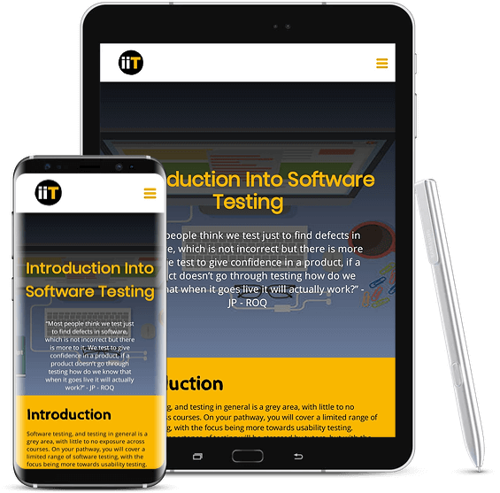
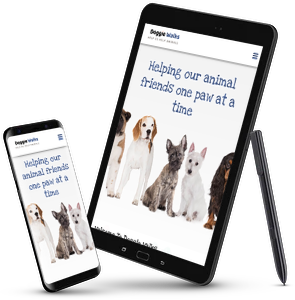
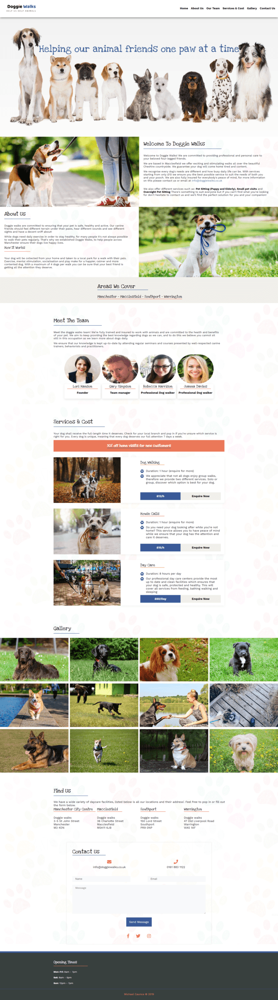
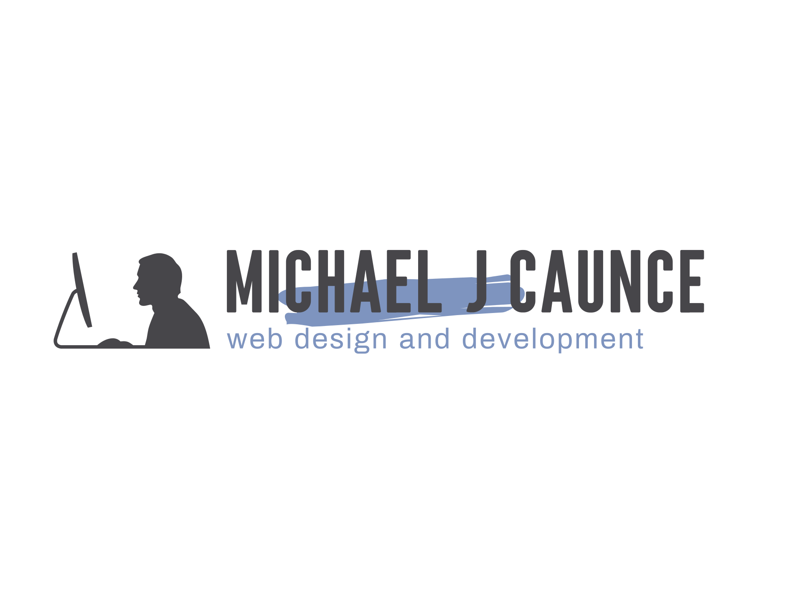
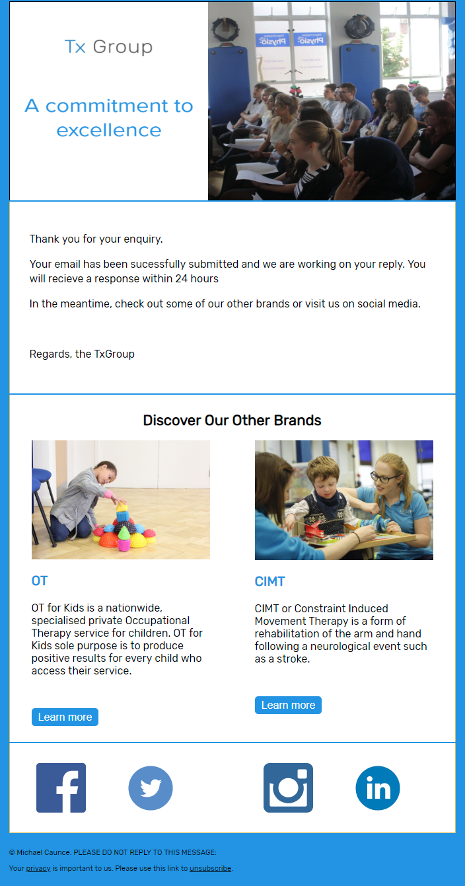

Michael J Caunce
Front end developer with a creative edge
Every story we tell and every interaction we create, must not only look beautiful, but has to feel and function beautifully, too.
about me
designer/developer
Based in the North West, I am a recent graduate from Edge Hill with aspirations of working within the web industry. I have recently completed a BSc in Web Design & Development, where I achieved an overall first-class classification.
I am an ambitious, personable and driven individual with a track record demonstrating passion, resilience and determination, shown by recently being awarded the ‘Academic Achievement Award’. Throughout my degree, I have acquired knowledge and experience in HTML5, CSS3, JavaScript, UX, PHP, Laravel, Version Control, Gulp, Sass, MySQL, the BEM methodology and extensive research skills.
As a recent graduate, I continue to learn and develop my skills as an active Udemy student where I recently completed ‘Become a WordPress Developer: Unlocking Power With Code’.
I am now actively seeking a junior or graduate role in web design and development as a front-end developer where I can demonstrate my passion for all things creative and technological I am eager to utilise my interpersonal skills and enhance the foundation of knowledge I have acquired throughout my degree.
An essential aspect of creativity is not being afraid to fail
Edwin Land
portfolio
recent projects
iiT - Voice Controlled Website
Learn MoreiiT - Voice Controlled Website
Third Year Project
Project Background
Speech recognition has developed into one of the most important technologies in modern society, primarily due to the emergence and acceptance of digital assistants. An extensive review of old and new literature presented a pattern with the focus being on the history, limitations and concept of speech recognition.
While there are many existing speech recognition technologies, and today there does not seem to be much that cannot be accomplished by using speech recognition, the idea of navigating through a website using speech remains scarcely documented. Interestingly, over half the world’s population is now connected to the internet, which yields the question, is it feasible to navigate through a website using only speech commands? The limited available literature highlights a gap in research and technology. Thus, presenting the opportunity to provide an answer and establish whether navigation through a website using speech is feasible or not.
For my final year project, iiT was created as an informative website providing an introduction into software testing. Additionally, iiT was used as the primary instrument in an attempt to discover whether it is feasible to navigate through a website using only speech commands.
Branding
It was essential to understand and incorporate theories associated with colours. It is believed that yellow stimulates mental activity, grabs attention and is seen before other colours when placed against black. Also, the colour scheme suited the logo and would provide a colour scheme which complements the websites intentions.
In addition to black and yellow, there was a desire to incorporate white into the logo due to the white background of the website. A clean logo using iiT was designed as an abbreviation of introduction into Testing. By assigning the colour yellow to the letter T, the emphasis of the logo is on T, just as the emphasis of the website is on Testing.
Design Process
Design Paradigm
According to a variety of scholars, design paradigms are often overlooked in the design phase. However, their importance and history is the focus of design in HCI. There are three commonly accepted design paradigms: Engineering, Human Information Processing and Design -Thinking.
When designing iiT, I adopted the Human Information Processing paradigm due to being based on how information is sensed, accessed, and transformed in the human mind. Since iiT is an informative website, the Human Information Processing paradigm suited the project
Design Perspective
In order to decide on an appropriate design perspective, it was essential to understand the aim and intentions of iiT. To do so, I had to remove the aim of the website and include speech recognition into the design perspective as the use of speech will be a necessary action of control.
Interaction perspective was best suited to the project due to being about how users interact and operate the website. The critical elements of the Interaction perspective focus on how users look at displays and manipulate controls, doing sensory, cognitive, and physical activity. All elements resonated with iiT and the incorporation of speech recognition.
Ideation
The design stage began with the process of ideation, a process used to form ideas for the design. While ideation is often used in a collaborative group scenario, irrespective, ideation was deemed to be the most appropriate method to begin the design phase.
The outcome was that the design for iiT encapsulates the importance of proximity with the content placed carefully together, allowing for the user to make associations by grouping. Each page displays similarity, allowing users to make further associations. The design presents the user with closure by incorporating white space, and lastly, the design displays continuity across all pages.
In addition to the four principles described, the design adopts a visual framework by applying a grid of equals, a design where several items look similar. Due to the design, the content is in a grid or grids, following a standard template with the visual weight of each item like the next. The theory of incorporating a grid of equals is that all items will appear to be of the same importance, with the user beginning to associate each item with one another. Visual hierarchy and visual flow are two vital elements to the layout. The importance of visual hierarchy related to ensuring the most important elements stood out.
Responsive Design
Mobile accounts for approximately half of web traffic worldwide. In the first quarter of 2019, mobile devices (excluding tablets) generated 48.71 percent of global website traffic, consistently hovering around the 50 percent mark since the beginning of 2017.
iiT was built to be responsive, although it was not built mobile first. If iiT was simply a testing instrument to test the feasibility of controlling a website using speech, the desire for a responsive design would have been significantly less. Irrespective, iiT can be viewed across several devices and is considered to be mobile friendly.
Doggie Walks
Learn MoreDoggie Walks
Third Year
Project Background
As part of my cis3159 module, I was allowed to select one small and one large project to complete. The list of large tasks was relatively small, but immediately, one task appealed more than the others. Doggie Walks is a fictional company created to provide us with the experience of what a developer experiences on a day to day basis. For me, this was an exciting proposition due to my aspirations of becoming a front end web developer.
The project allowed me to experience the process of requirements gathering to building a final website in a short period. The critical aspect of the task was to take the list of requirements and interpret them to provide a bespoke website for the customer.
Responsive Design
Mobile accounts for approximately half of web traffic worldwide. In the first quarter of 2019, mobile devices (excluding tablets) generated 48.71 percent of global website traffic, consistently hovering around the 50 percent mark since the beginning of 2017.
Doggie Walks was designed and built to be responsive, although it was not built mobile first. Doggie Walks is a website that is commonly accessed across several devices with the analytic data provided, suggesting that users commonly access the website on a mobile device for a specific period. The data provided suggest that users access the website with a specific goal. Therefore it was of paramount importance to design Doggie Walks to be mobile friendly with easily accessible information across all devices.
User friendly interface
The premise of Doggie Walks to deliver a clean design as per the client's request. While the list of requirements was relatively long, it was inevitable that every requirement could not be met. It was my responsibility to extract the requirements that kept within the ethos of a clean design.
The client requested the colour blue, which is evident as the main colour throughout. Also, the client requested a heavy influence of the doggie paw graphics through examples provided. Paw prints are evident as bullet points in the services section along with a very subtle hint of paw prints as the background across the entire page, again keeping with the clean theme throughout.
Laravel Blog - All Things Web
Learn MoreBlog - All Things Web
Self Learning
Project Background
With little exposure to the PHP Framework, Laravel during my studies, I decided to embark on the journey of self-learning.
Over the last three years, my course focussed predominantly on Javascript with very little time dedicated to PHP. We did dabble with Laravel and were tasked with the challenge of building a secure questionnaire application. Despite being relatively satisfied with the outcome, I acknowledged that it could have been a lot better.
Laravel is a popular framework with prospective employers, and I understood that I needed to start again with both PHP and Laravel. The problem of learning a new language and framework simultaneously was an uphill challenge.
The ideal project was to build a blog system incorporating all the features you would expect from a typical blog.
Branding
The branding throughout the blog incorporates the older colour scheme of the brand which, has recently been refreshed within this site.
At the time of the construction of the blog, both my portfolio site and the blog combined a consistent design, colour scheme and identified providing a consistent brand association for users. However, despite the recent design upgrade of my portfolio, the design and colour scheme of the blog will remain as they are, as the blog is not live.
If the blog goes live in the future, of course, the design will be upgraded to achieve brand consistency.
Features
Secure Backend
Blog administrators must first register and can log into the blog via their email and password. Administrators can also reset their password, should they forget.
Upon logging in, administrators can manage all of the content of the blog. From creating a new post to deleting comments, abilities reserved only for backend use by administrators.
CRUD
The blog is a CRUD app built using Laravel, meaning that the blog should provide four basic types of functionality, Create, Read, Update, and Delete resources.
Create: Consisting of a function which is called when a new post, category, or tag is created.
Read: Consisting of a function which is called to display all of the blog posts and associated categories and tags.
Update: Consisting of a function to call when a blog post or tag requires editing.
Delete: Consisting of a function to call to remove a blog post, tag or comment.
Administrators have the facility to create, edit and delete blog posts, tags and categories, and user comments.
Gallery


World Museum Liverpool
Learn MoreNational Museums Liverpool
Second Year
Project Background
As part of my cis2162 module, we were placed in groups and asked to select a project from a list of project briefs. While the practical side was to create the build; there were no marks for this. The build was a tool to demonstrate and reflect on our team working abilities with a bonus of possibly presenting or getting our work in a live environment.
Inevitably, with no marks on offer, the majority of the group displayed no interest or desire to contribute. Despite this, another team member and I decided to utilise the skills that we had learnt and created a build worthy of presenting the National Museums Liverpool staff. The design and build of the website is my work, including all JavaScript, while the animation is the work of the other team member.
Proudly, we were selected to present and demonstrate our work before the National Museum Liverpool staff as well as being one of two pieces of work selected to be hosted inside the NML.
Build Process
Brief
An interactive children's game using one of the main themes and possibly some of the artefacts in the museum create a small puzzle-based game for children to interact with.
Some examples are: Build a dinosaur - A Touchscreen game/app where you assemble the bones of a dinosaur on screen and at the same time a projector shows a life-size skeleton being built as an image on the nearby wall.
Our Interpretation
We decided to take the brief and interpret it in a way that would represent NML and also be cost effective. Early in the planning phase, we recognised that if our build was to be demonstrated within the museum, it must be cost effective.
We decided to create a dinosaur jigsaw puzzle, where children could assemble to the bones of a dinosaur in the form of a jigsaw. Once complete, the jigsaw transforms into an animated dinosaur and walks off the screen, accompanied by a realistic ROAR!
NML Branding
Before the jigsaw puzzle could be constructed, we decided to create a website which replicated the existing National Musem Liverpool website. Much time was spent sourcing logos and identifying an identical colour scheme that is not only easily recognisable as the NML brand but is an identical replica of the existing design.
By replicating the design of NML, the jigsaw game could be permanently stationed within the Museum with no costs attached. The file could be kept on the terminal locally, meaning children could interact with the game in a setting that represents the NML brand. I tried to replicate the world museums web page as best I could. The end product is an easily recognisable design identifiable with the World Museum Liverpool brand.
Jigsaw Puzzle
The puzzle incorporates the 32 piece design as standard, but it was explained that further expansion could be discussed to include easier jigsaw puzzles on a level basis.
The majority of the code for the puzzle is predominantly Javascript with a small amount of JQuery. It is written in JavaScript, but it uses the DOM to access the document and its elements.
The combination is used to create a range of functions to ensure the jigsaw puzzle works. Firstly, a function identifies any objects (images) that may or may not be draggable. Another function defines whether the object can or cannot be dropped; this function will only accept an image dropped into the correct drop zone. Another function to define the game as complete, which contains a list of code which is executed once all the pieces are in the correct place. Lastly, a function was created, which contains an array of facts which appear beneath the puzzle; this function executes when a piece has been placed in the correct drop zone.
Demonstration
The Tx Group
Learn MoreThe Tx Group - Email Template
Third Year
Project Background
In addition to the large project selected for my cis3159 module (Doggie Walks), the smaller project I undertook was to design and create a return email. Tx Group is an umbrella corporation designed and developed by Nuttersons, which connects all the services they have designed and developed underneath one leading brand.
Currently, when a customer fills out one of their forms, they receive a return email which confirms their message has been received. However, their existing email was dull and did not represent the Tx Group brand. The email had to include the Tx Group logo, a Thank you message explaining how long they should expect a reply, and links to Tx Group social media feeds.
User friendly interface
The premise of the email was to deliver a clean design which represents the Tx Group. As per the client's requests, the email includes the Tx Group logo, a thank you message and links to their social media feeds. Above all, importance was placed on ensuring that all the requirements were incorporated in a design that best reflects the Tx Group brand.
In addition to the client’s requirements, the email includes a section promoting other brands within the Tx Group. In keeping with the Tx Group brand, the logo and colour scheme are an identical match, providing consistency and recognition to customers.
It's so Miami
Learn MoreIt's so Miami
Pre First Year
Project Background
Before being accepted onto my degree, I undertook a course with Edge Hill aimed at mature students who want to return to education. This long seven-week course ensured that I was prepared to progress into a full-time degree in Web Design & Development.
The final piece of work on the Fastrack course was to design, build and present my ultimate website. With only one week to submit and no previous knowledge or experience of web design, I was pushed to my limits to show my work.
The topic was to a previous holiday destination, Miami. 'It's so Miami' is a website designed and built to be used as an informative website for prospective visitors of Miami.
Design is not just what it looks like and feels like. Design is how it works.
Steve Jobs